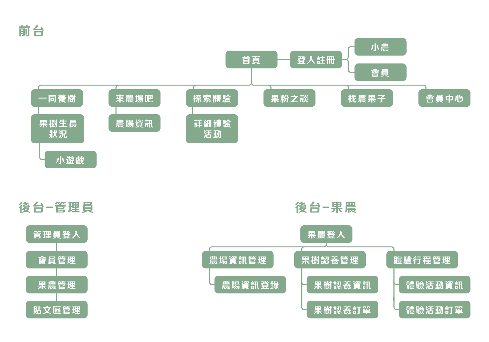
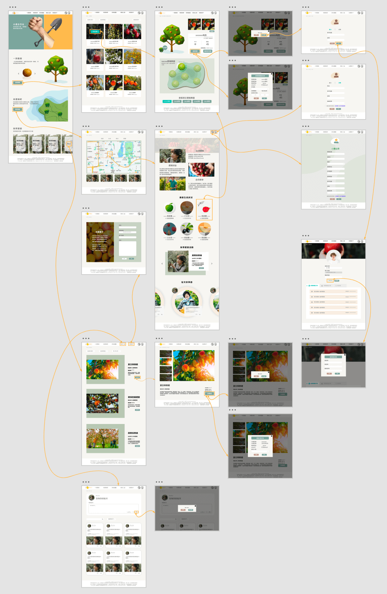
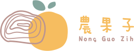
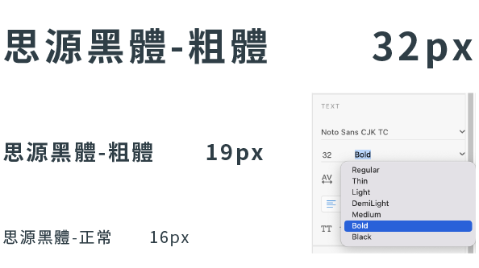

小農推廣平台
用戶體驗設計・UX設計
藉由推廣平台讓小農建立自己的品牌增加曝光度
背景故事
近年隨著食安事件層出不窮、消費者對飲食安全越來越重視，使得一直以來由大廠主導的食品市場出現翻轉，在多家著名食品業者深受食安風暴重挫形象之際，小農產品開始受到消費者的信任和青睞，藉此成立農果子小農推廣平台讓消費者與小農互動。
網站目的
1. 藉由推廣平台讓小農建立自己的品牌增加曝光度。
2. 消費者透過網站與小農進行交流及活動資訊。
3. 透過果樹認養、體驗活動讓大眾了解農作物栽種的過程。
網站架構
設計概念
視覺系統

LOGO設計
年輪的一環相當於是植物生長的一年，用年輪和橘子來寓意我們農果子網站上的果樹代表每位小農年復一年的種植心血。

字型設計
使用非襯線體的思源黑體 Noto Sans CJK TC，呈現簡單輕鬆風格，在標題使用 bold，內文部分使用 regular。
按鍵設計
在網站畫面以白色及主色來代表不同功能的按鍵，在按鍵被觸摸時呈現強調色，彈窗的按鍵以暗紅及主色呈現。
#84A59D
#F6BD60
#F7F6F2
#17C3B2
色彩計畫
主色綠色帶點灰階，表現寧靜和希望，使用不同的綠色表現層次感，次主色橙色讓人聯想到豐碩的果實，與主色作為對比搭配。
解決方案
目標使用者：親子消費者
訪客可以在網站中點選查看每棵果樹生長狀況，包含農場名稱、水果大小及數量的真實照片。
使用者也可瀏覽網站所有的農場活動，報名參加體驗採果的樂趣，增進親子互動。
目標使用者：小農
建立自有品牌，透過推廣平台進入消費者眼中，藉由網路行銷，讓品牌快速曝光。
透過自有品牌的線上農場果樹認養、體驗活動，建立品牌知名度。
目標使用者：網站管理者